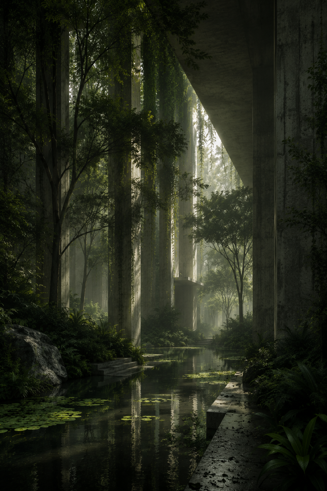

AURELIA
Singapore • Research Campus
A regenerative research campus where architecture adapts to seasonal ecosystems, creating spaces that evolve with climate, biodiversity, and scientific discovery.
View Project →
Architecture Studio
THRYN creates environments where architecture, ecology, and human experience evolve together. Every project is designed to respond to its landscape rather than reshape it.
View Selected WorkStudio
THRYN is an architecture studio exploring the relationship between people, landscape, and the built environment. Our work combines thoughtful design, sustainable materials, and careful craftsmanship to create spaces that remain relevant for generations.
Selected Work
Singapore • Research Campus
A regenerative research campus where architecture adapts to seasonal ecosystems, creating spaces that evolve with climate, biodiversity, and scientific discovery.
View Project →Copenhagen • Mixed-Use District
An urban neighborhood where green infrastructure, public spaces, and contemporary architecture merge into one connected landscape.
View Project →Kyoto • Cultural Center
A cultural destination crafted from reclaimed timber, natural stone, and quiet courtyards that celebrate craftsmanship and local heritage.
View Project →Approach
Every project begins with understanding its landscape, culture, and community. We believe thoughtful architecture should improve everyday life while respecting the environment it becomes part of.